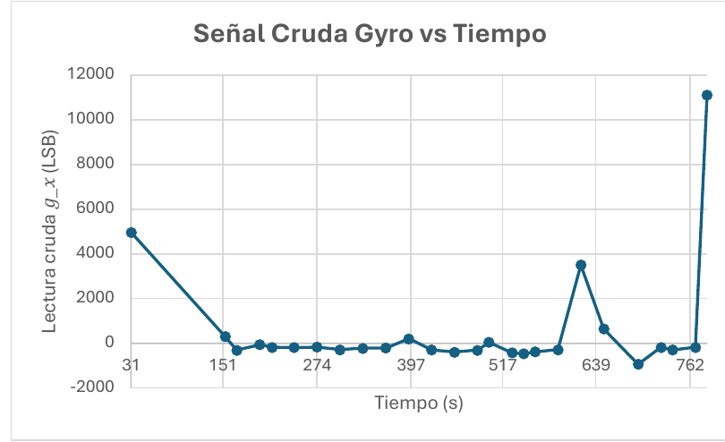
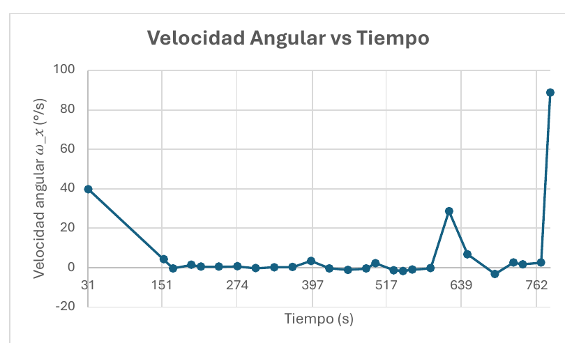
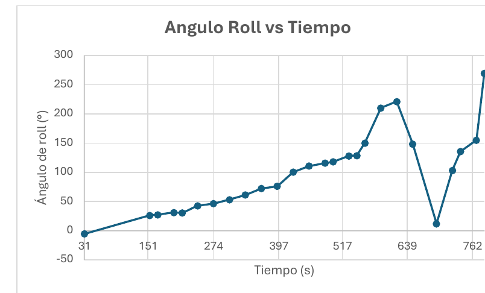
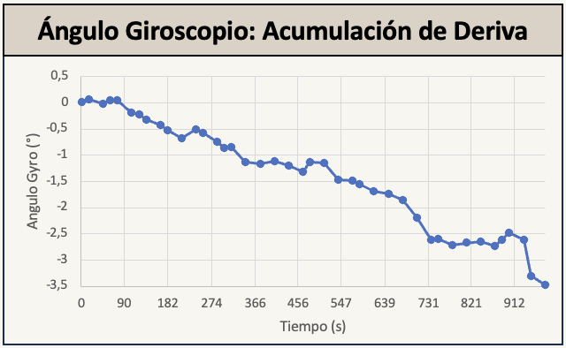
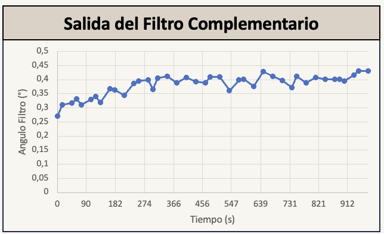
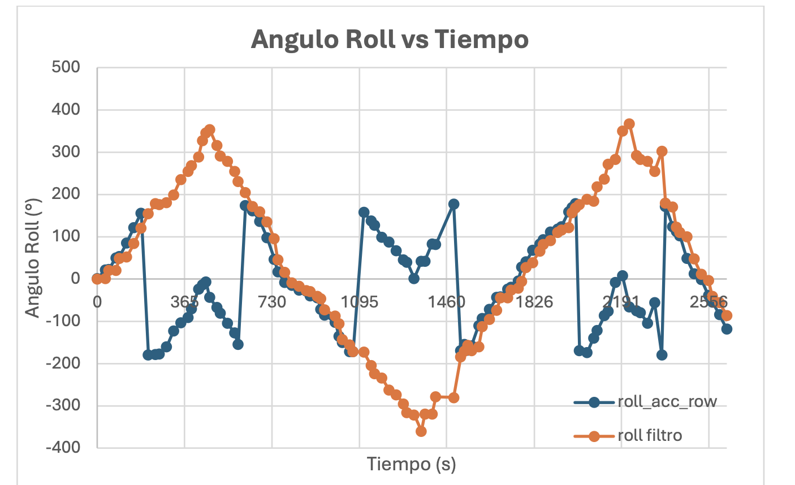
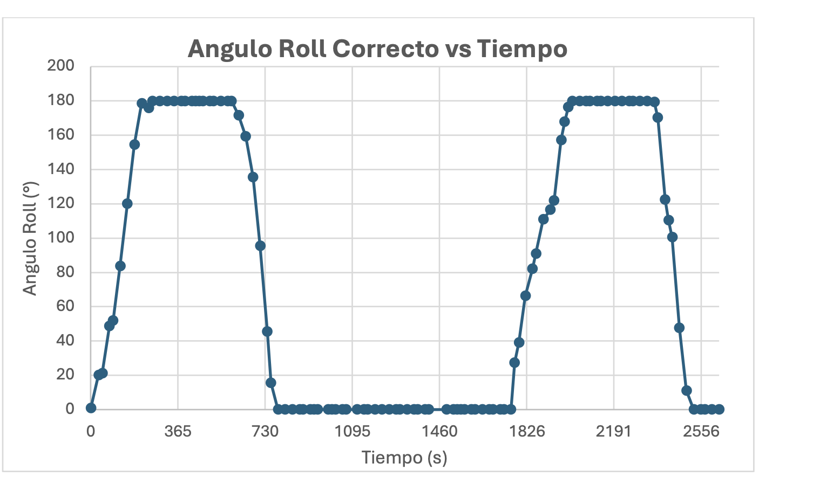

01. Project description and objectives
This project presents the design, construction and control of an anthropomorphic robotic arm driven by a sensor glove. The system reproduces the movements of the human hand, specifically finger flexion and wrist rotation, using low-cost sensors and off-the-shelf microcontrollers.
It combines mechanics, electronics and programming, and focuses on the practical problems that appear when a real system is built. Beyond a working system, the work analyses the design decisions, the limitations found and the solutions adopted.
It belongs to the field of human-machine interfaces and assistive robotics. It is an experimental prototype that can be the basis for motor rehabilitation, training or teleoperation, where a natural interface lowers the learning curve.

General objective
Design, implement and validate a 3D-printed anthropomorphic robotic arm, together with its control system based on a sensor glove, to reproduce the basic movements of the human hand: finger flexion and extension, and wrist rotation.
Specific objectives
- Design a sensor glove that captures finger flexion with flex sensors and wrist orientation with an inertial measurement unit (IMU).
- Implement an electronic system with off-the-shelf microcontrollers that acquires and processes the sensor signals.
- Design and control a servo-driven robotic arm able to reproduce the movements captured by the glove.
- Develop the software that reads, processes and converts the signals into commands for the actuators, including the characterisation of the flex sensors.
- Establish a reliable communication between the glove and the arm.
- Evaluate the overall behaviour of the system and analyse its limitations.
Scope and limitations
The arm has just the degrees of freedom needed to flex the fingers and rotate the wrist. The printed circuit boards were designed, built and assembled during the project itself. The software is limited to basic control algorithms.
It does not reproduce finger abduction or adduction, nor full forearm rotation. It does not use adaptive control, machine learning or advanced biomedical signal processing either.
Economic: the budget limited materials and components to low-cost commercial solutions.
Mechanical: the printed parts already had fixed sizes and shapes, leaving little room during assembly.
Power: the high consumption of the servos required an external supply independent from the microcontroller's.
02. General system overview
For the arm to copy my hand we need sensors that capture the movements, a wireless link that sends the data and actuators that reproduce them. The system is split into two nodes: the glove, which captures, and the arm, which acts.
Capture at the glove

Flex sensors
One per finger. They measure flexion and extension.

IMU MPU6050
Measures the wrist rotation.
Transmission
Bluetooth
An ESP32 microcontroller processes the readings and sends them. A second ESP32 receives them at the arm. There is no cable between glove and arm.
Reproduction at the arm

5 servos with thread
Each servo is tied to a thread connected to a finger joint. When it turns it reels in the thread and the finger bends.

1 servo with gears
The sixth servo transmits its rotation to the wrist through gears.
Overall operation
- The glove reads the flex sensors and the IMU, and filters the signals.
- The resulting values are packed in a single frame and sent over Bluetooth to the arm.
- The arm receives the frame, extracts the values and updates the setpoint of each finger servo and of the wrist.
This modular architecture separates responsibilities and eases debugging, since each node can be tested on its own. It also allows adding sensors or changing the communication method without touching the rest.
03. Robotic arm design and structure
The arm was built by combining two open 3D-printing projects and redesigning the part that joins them. Click each step to see the details.
04. Control glove design and integration
The glove is the part that captures the movement. Hover or click each label to see what every element does.

Five flex sensors, one on each finger, measure flexion and extension. They must be firmly attached yet flexible: with some common adhesives the sensor became stiff once dry and no longer bent properly.
The MPU6050 IMU sits at the wrist and records its rotation. It is powered at 5 V directly from the board, because the GY-521 module has an internal regulator that provides the 3.3 V the sensor needs.
The electronics (microcontroller, battery and PCB) are in a box on the forearm, held with velcro. It has one opening for the glove wiring and two for the power connector, so it can be plugged and unplugged without opening it. During prototyping the wiring stays visible to make debugging easy.
05. Flex sensor: finger flexion-extension
To measure how each finger bends we use a resistive flex sensor. The microcontroller cannot read resistances, so it has to be converted into a voltage and then into a number.
How the sensor works

The more it bends, the more its resistance increases, so it indicates how much the finger is flexed. It has limitations: behaviour differs from sensor to sensor, depends on how it is attached to the glove and is sensitive to noise. That is why each sensor is characterised separately.
From resistance to voltage: the voltage divider
The ESP32 measures voltages between 0 and 3.3 V, not resistances. So each sensor forms a voltage divider with a 47 kΩ fixed resistor. The sensor is on top and the fixed resistor at the bottom; the voltage is taken at the midpoint.
Vout = Vin · Rfix / (Rfix + Rflex)
When the finger bends, Rflex rises and Vout drops.

From voltage to number: the ADC
The ESP32 has a 12-bit analog-to-digital converter (ADC) that turns each voltage between 0 and 3.3 V into a number between 0 and 4095. That number is what the program reads.
ADC = Vout / 3.3 · 4095
Which fixed resistor to choose
At first a 10 kΩ resistor was used. It worked, but the signal covered a small range: 150 to 460 ADC units, a variation of about 310 points. SparkFun recommends 47 kΩ for these sensors. With that value the reading goes from about 1600 to 2300, a variation of about 700 points. A wider range tells small changes apart better and gives smoother servo control, so 47 kΩ was chosen.
Characterisation: angle and reading follow a straight line
For each sensor the finger was fixed at 0°, 45°, 90°, 135° and 180° and the ADC reading was recorded. The points line up roughly on a straight line, with no jumps or saturation. Although the sensor is not perfectly linear physically, the scatter is small enough to approximate it with a line within the working range.
From reading to angle: the map() function
Since the relation is a straight line, the servo angle is obtained by linear interpolation with Arduino's map() function. We only need the reading with the finger extended (maxFlex) and at maximum flexion (minFlex). To recalibrate a sensor it is enough to change those two values.
angle = map(flex, minFlex, maxFlex, 180, 0)
Try it with the index finger
minFlex 1530 · maxFlex 2100
ADC reading: → servo angle: °
Calibration of the five sensors
The five sensors were characterised one by one, because of the differences between them and their position on the glove. Each has its own ADC range, from maximum flexion to the extended finger, and those values are the limits of the mapping.
Filtering and safety
Each reading is the average of 8 consecutive samples to reduce noise. Readings outside the 1000 to 3000 range are considered invalid and the last valid value is kept. At the arm, the servo does not jump to the new position: in each frame it moves only a quarter of the difference to the target, which makes the movement smoother.
06. MPU6050 IMU: wrist rotation
Wrist rotation is measured with an IMU, which combines a three-axis gyroscope and accelerometer.
The path to a reliable angle had five stages. Follow them one by one with the buttons.
1. How I get degrees from the gyroscope
The gyroscope does not measure the angle but the angular velocity: how fast the sensor turns. It was set to the ±250 °/s range, because the human wrist does not exceed that speed and this gives the highest resolution: 131 units per °/s. To get degrees there are four steps: read the raw value gx, subtract the bias measured at rest, divide by 131 to get °/s, and integrate the velocity over time, that is, add ω·dt to the previous angle at every step.
ω = (gx − offset) / 131 roll_gyro = roll + ω · dt



2. The gyroscope has a problem: drift
The angle obtained is very smooth in the short term, but it accumulates error over time. Even small inaccuracies, such as 0.1 °/s with the sensor still, add up at every iteration. In the plot the sensor was completely motionless and yet the computed angle drifts about 3.5° in roughly fifteen minutes. With a longer test the deviation would be even larger. The gyroscope alone is not enough for a stable long-term measurement.

3. I add the accelerometer and a complementary filter
The accelerometer gives an absolute angle relative to gravity, computed with the arctangent of two of its components. It has no drift, but it is noisy and affected by linear accelerations. To take the best of each sensor I applied a complementary filter: the gyroscope dominates the fast, smooth behaviour, and the accelerometer slowly corrects the accumulated error.
roll_acc = atan2(ay, az) roll = 0.98 · roll_gyro + 0.02 · roll_acc

4. A new problem: the jump from 180° to −179°
When testing the system with the servo, a strange behaviour appeared: on reaching about 179°, the angle suddenly became −179° and the servo made an abrupt move opposite to the real rotation. It was not a measurement error: each sensor represents the angle with a different range. The gyroscope is integrated continuously and can go past 180°, while the accelerometer, using atan2, always stays between −180° and 180°. The same position can be 181° for one sensor and −179° for the other.

5. The fix: angle unwrapping before the filter
Before applying the filter, the accelerometer angle is compared with the gyroscope angle. If the difference exceeds ±180°, both represent the same orientation on different turns, and a full turn (360°) is added or subtracted to align them.
Δ = roll_acc − roll_gyro Δ > 180° → roll_acc − 360° Δ < −180° → roll_acc + 360°
This way the angle is continuous and stable even when passing ±180°. Before sending it to the servo it is limited between 0° and 180° and scaled by a factor of 1.82 to fit the range detected by the IMU to the servo travel. When the real rotation exceeds 180° the value saturates at the maximum, and likewise below 0°. The servo never makes abrupt moves or reversals.

07. PCB design and fabrication
To organise the connections, two custom printed circuit boards (PCBs) were designed and built, one for the glove and one for the arm. The design was done with KiCad.
What each board does
Glove PCB: signal conditioning
It groups the connections of the five flex sensors and the five 47 kΩ resistors of the voltage dividers, which adapt the variable resistance of the sensor to the analog input of the Wemos. It has one connector per sensor and a nine-pin connector to the Wemos D1 R32, with two GND and two 3.3 V pins.
Arm PCB: power interface
It centralises in one place the connections of the six servomotors with the Wemos. The servos share power and ground, and each one's PWM signal goes to a Wemos output. It includes a decoupling capacitor on the supply line to absorb the current peaks of the servos.
From design to the soldered board
Each board went through the same process: the connection diagram is drawn, moved to KiCad, the tracks are routed and, finally, the board is made and the components are hand-soldered. Pick a board and go step by step.
Problems and improvements
In the first version some tracks were too thin and the ground plane on the top face did not print. A second version was made with wider tracks. The ground plane also made soldering harder: the copper spread the heat and the tin, and a clean finish was difficult.
Design the board to be assembled from a single side, with vias to move some connections to the other layer. On the arm PCB, keeping the servo interference away from the microcontroller would allow a single power supply.
System power
The system uses separate power supplies for the microcontroller and for the actuators, to avoid voltage drops and interference caused by the high consumption of the servomotors. In the first tests, when several servos moved at once, the Wemos restarted. The grounds (GND) of all parts stay connected, because the PWM signals need a common electrical reference.

5500 mAh rechargeable Li-ion battery, as a 9 V source.

Two 3.2 V 18650 Li-ion cells in series, about 6.4 V nominal.

Promax FAC-363B lab supply at 6.5 V. Peak consumption of about 1.6 A with the six servos.
Common GND across the three parts
08. Bluetooth communication and protocol
The two ESP32 boards communicate over classic Bluetooth in SPP mode (Serial Port Profile), a transparent serial link between the two boards. It is a simple solution, with low latency and enough speed for this data.
Glove ESP32
Client. It reads the sensors, builds the frame and sends it. It connects to the server using its MAC address and, once the link is up, starts transmitting.
Arm ESP32
Server. It waits for the connection, receives the frame, extracts the values and moves the servos.
The data frame
The glove sends a line of text every 100 ms, that is, at 10 Hz. This avoids saturating the channel and lowers the chance of losing data. Each frame carries six space-separated values and ends with a line break. Click each value to see what it means.
The simple text format eases debugging with the serial monitor and lets the receiver interpret the data robustly: if a line cannot be read, it is simply ignored.
09. Bill of materials and budget
Components and materials used in the project. You can search them by name and edit the prices; the total cost updates by itself.
| Component | Category | Qty | Unit price (€) | Subtotal |
|---|---|---|---|---|
| Total of the results | ||||
Indicative prices. Changes are saved in your browser.